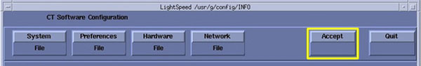

Illustration 7: Shell Configuration Window

Illustration 6: Accept Configuration Window

After clicking [ACCEPT] the system configures the system. While the configuration is going on, the results are displayed in a Shell window that closes when the loading process is complete.
Illustration 7: Shell Configuration Window